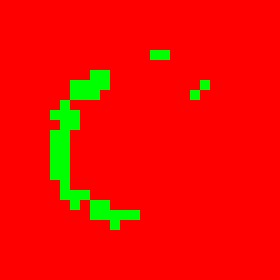
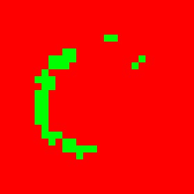

Libraryless MNIST in C
Recognize handwritten digits with 97.5% accuracy using single layer ANN and no libraries.
Technologies used: C, Artifical neural network, hand calculated backpropagation, linear algebra, multivariable calculus, image processing
Task: Recognize a handwritten digit using a single layer neural network in C without any libraries.
Some context
After completing my first artifical neural network that successfully classified XOR, AND, NAND, and not XOR, I had a complete neural network library.
With some minor tweaks and adjustments I used that library to solve the MNIST dataset with a 97.5% accuracy.
The following are the highlights of this project.
Network Structure
I used several different structures while trying to reach my goal of 97.5% accuracy but I decied on this network structure: 784 Input Nodes : 300 Hidden Nodes : 10 Output Nodes
#define INPUTNODES 784 #define HIDDENNODES 300 #define OUTPUTNODES 10 I = MatrixInitRandom( 1, INPUTNODES ); IH = MatrixInitRandom( INPUTNODES, HIDDENNODES ); H = MatrixInitRandom( 1, HIDDENNODES ); HB = MatrixInitRandom( 1, HIDDENNODES ); HO = MatrixInitRandom( HIDDENNODES, OUTPUTNODES ); O = MatrixInitRandom( 1, OUTPUTNODES ); OB = MatrixInitRandom( 1, OUTPUTNODES );
Initial Weights and Biases
I used a custom unimodal normal distribution centered at 0 with a standard deviation of 0.01 to initialize the weights and biases.
double normalRand(double center, double sd) {
double int_max = INT_MAX;
double sum = 0;
for (size_t i = 0; i < 12; i++) sum += (float) rand() / RAND_MAX;
sum -= 6 + center;
sum *= sd;
return sum;
}
Training the Network
The training process from a high level is actualy really simple.
- Feed a training image through the network.
- Backpropagate the error and update weights/biases.
- Goto 1
// For each epoch
for (int j = 0; j < NUMEPOCHS; j++) {
// For every training image
for (int i = 0; i < train.size; i++) {
// Feed the image through the network
feedForrward(&I, &IH, &H, &HB, &HO, &O, &OB, &ANS, &ERR, &train, i);
// Back propagate the error
backProp(&I, &IH, &H, &HB, &HO, &O, &OB, &ANS, &ERR);
}
}
Testing the Network
To test the network we will give it 10000 images it has never seen and judge the network's success basied on its accuracy on those images.
for (int i = 0; i < test.size; i++) {
// Get image prediction
feedForrward(&I, &IH, &H, &HB, &HO, &O, &OB, &ANS, &ERR, &test, i);
// Find the highest output
highest = 0; index = 0;
for (int j = 0; j < O.c; j++) {
if (O.data[0][j] > highest) {
index = j;
highest = O.data[0][j];
}
}
// Check if the guess is correct
if (ANS.data[0][index] == 1) correctCount += 1;
else {
for (size_t i = 0; i < ANS.c; i++) {
if(ANS.data[0][i] == 1) errors[i]++;
}
}
}
Results
Starting from scratch after only three epochs the network's output looks as follows: (784 Input Nodes : 300 Hidden Nodes : 10 Output Nodes)
---------------- CS783 - MNIST - Mikian Musser ----------------
-------------------- Fetching Image --------------------
Read 60000 images
Read 10000 images
-------------------- Environment Variables --------------------
Random Seed : 1551066110
Normal Distribution Center : 0
Normal Distribution SD : 0.01
Learning Rate : 0.001
Number of Epochs : 3
-------------------- Network Shape --------------------
Input : 1 X 784
Input -> Hidden : 784 X 300
Hidden : 1 X 300
Hidden Bias : 1 X 300
Hidden -> Output : 300 X 10
Output : 1 X 10
Output Bias : 1 X 10
Answer : 1 X 10
Error : 1 X 10
-------------------- Data Shape --------------------
Train Size : 60000
Test Size : 10000
-------------------- Training Network --------------------
Time 353s --- Epoch 2 --- Image 60000 --- Accuracy 88.858%
-------------------- Testing Network --------------------
Time 368s --- TESTING --- Image 10000 --- Accuracy 90.17%
Incorrect Counts
0: 27
1: 33
2: 150
3: 99
4: 103
5: 196
6: 38
7: 119
8: 120
9: 98
Inside the network
Lets visualize what each hidden node is looking for. Positive weights are green and negitive weights are red.

Unfortunately this does not tell us much, it looks pretty random.
Lets try feeding it an image of a 0 and looking at those values again.
 

We can see that different nodes catch different parts of the image. Most don't capture the whole image.
JS Port
Finally after training, testing, and visualizing our network we can export those weights/biases for others to use.
I imported those weights and biases and used code from my Flappy Bird NNV (Check it out!) to create a browser application for users to test it out!